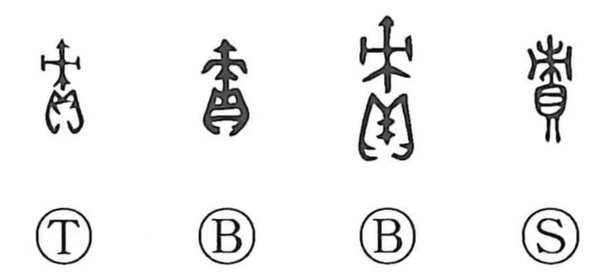

Explanation
責 is a phono-semantic character: the 貝 element signals valuables and tribute, while the component represented by 束 functions as the phonetic and evokes a sharpened stake set up as a marker or used to tag goods. The graph originally pictured valuables that had been taken in as levies and tribute being marked, and thus meant property collected as tax. From this concrete scene it came to mean to exact and collect, then to press or assail, and finally to blame and find fault. Within the same phonetic family, 積 refers to assessed agricultural produce and 績 to textiles, while 債 expresses the duty arising from such levies, hence debt. In compounds such as 責務 and 責任, the character retains this core sense of an obligation to bear and discharge one’s assigned dues—the responsibility originally tied to paying levies.